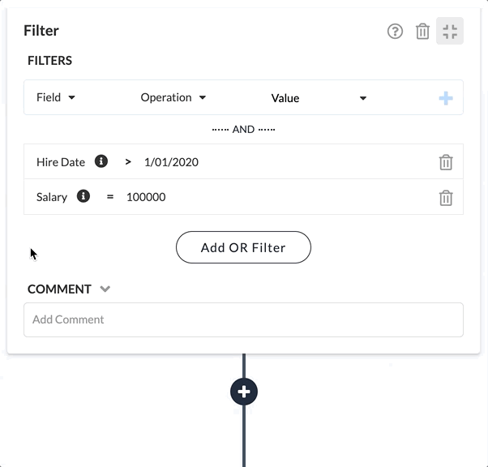

Filter Step
This step applies a user-definable set of conditions to each record. If the conditions match, the record is passed on to the following steps. If there is no match, the record is discarded. Filters can be used when processing sets of input records that may contain rows that are not of interest in the current analysis.
Configuration
To configure a Filter, start by clicking the Add Filter button, then complete the following.
- Field - select a field to apply the condition to.
- Operation - select an comparison, for example '='.
- Value - enter a value to compare the field value to. You can enter a specific value or set it from data values in the current record.
Click the + icon to add the condition. You can add more conditions to the list. For multiple conditions, all must match for the filter to match.
You can specify an alternative set of conditions by click the Add OR Filter button. When this is done, either the first set or the second set of conditions must match. In this example, only records with both Hire Date greater 1/01/2020 AND Salary equal to 100,000; OR records with Name equal to 'Smith' will pass to the next steps.
See also: About Stage Steps